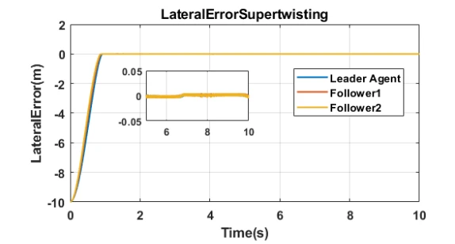
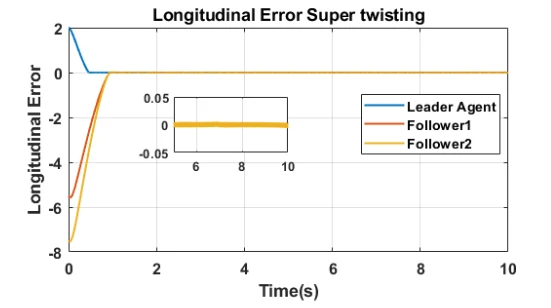

Master's thesis · Nonlinear control
Robust control for vehicle platooning
Robust longitudinal and lateral control of a three-vehicle platoon, examining how sliding-mode formulations trade tracking accuracy against control effort.

Research focus
My master’s research addressed spacing regulation and path following under nonlinear vehicle dynamics. I compared controller behavior through convergence, overshoot, tracking-error integrals, and control energy.
Methods and contributions
- Dynamics and estimation. Modeled a three-vehicle platoon in MATLAB/Simulink at a reference speed of 8 m/s. Used a Luenberger observer to estimate yaw rate from lateral velocity for lateral control.
- Nonlinear control. Compared proportional–integral–derivative (PID) control, conventional Sliding Mode Control (SMC), SMC with a Power Rate Exponential Reaching Law (PREL), and second-order super-twisting control for both motion channels.
- Comparative analysis. Compared integral absolute and squared errors (IAE/ISE), their time-weighted forms, and control energy across all three vehicles to distinguish tracking accuracy from actuation effort.
Results
PREL-based SMC produced the lowest error indices in the simulation comparison. Super-twisting achieved lateral convergence without overshoot and the lowest longitudinal control energy. Related work was presented at ACODS 2022.
A closer look


Read more
Figures and controller comparisons are from my master’s thesis.